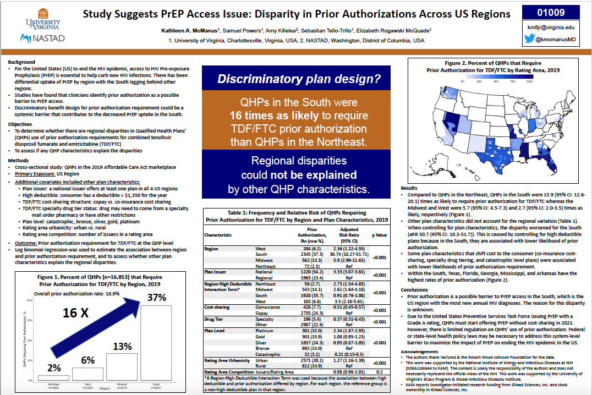

read the paper
In Fall 2018, UVa division of infectious disease began a research partnership with the National Alliance of State and Territorial Aids Directors [NASTAD] to inform NASTAD's policy and advocacy by conducting data-driven research on disparities in access to HIV services. They brought me into the partnership to manage all things data, analysis, and communication. This paper on systemic disparities in prior authorization requirements for pre-exposure prophylaxis represents the first fully published paper resulting from our partnership.
a quick background:
Pre-Exposure Prophylaxis (PrEP) for HIV is a daily-use drug at-risk individuals can take to drastically reduce their chances of getting the disease. It successfully protects individuals from acquiring HIV in about 99% of sexual encounters. PrEP is an important part of ending the HIV epidemic. But, there are significant disparities in PrEP availability, particularly in the Southern US where the HIV epidemic is the strongest. People tend to explain this trend using factors that place the burden on the South. These include a lack of clinicians with PrEP knowledge, absence of health insurance, stigma, and underestimation of personal HIV risk.
Using a data set of all the health insurance plans available for purchase on US state health care marketplaces, we wanted to see if there were other barriers external to the South that might help explain this limited uptake. In particular, we were interested in the barrier posed by prior authorization (PA) requirements. Prior authorization requirements mean that your doctor must obtain approval from your health insurance company before providing you specific treatments. Health insurance companies claim this helps them better manage your care and protect you from unnecessary treatments. Physicians, however, find prior authorizations harmful to patients and extremely burdensome. We were interest in PA because any delay in access to PrEP is an opportunity for an individual to become infected with HIV, and barriers due to PA can prevent individuals from taking up a new medication entirely.
some takeaways:
- 18.3% of health care plans offered required prior authorization for PrEP. But there were significant regional disparities to this number with 2.3%, 6.2%, 13.3% , and 37.3% of plans requiring prior authorization in the Northeast, West, Midwest, and South, respectively
- Plans in the South were 16 times as likely to require PA as plans in the North
- This undue burden on the South, where there is a disproportionate impact of HIV on BIPOC and LGBTQ identifying individuals to a greater degree than in any other region of the US represents a systemically racist application of health care policy.
- Plans offered by companies who operated in more than one regions of the US were more than 3 times as likely to require PA than plans that were offered by companies who operated in only one region of the US. Further investigation revealed that companies who operated in all 4 regions of the US required PA in the south at significantly higher rates than they did in their other regions of operation.
- Plan characteristics that shift cost to consumers such as co-insurance, specialty tiering, and high deductibles allowed patients to have lower likelihood of PA. This means that if you are willing to pay for your PrEP, you do not need to seek authorization. This runs somewhat counter to the narrative stated by insurance companies. If PA is to ensure patient protection against unneeded or dangerous medications, why can a patient buy their way out of it?
reception:
We presented this research as a poster at the 2020 Conference on Retroviruses and Opportunistic Infections and later had it published by the Journal of the American Medical Association's Open Network.
Since then, it has been used by NASTAD's policy advocates in US national health care policy meetings to support regulations on prior authorization. It has also received broader media attention for its exposure of discriminatory practices in prior authorization as well.